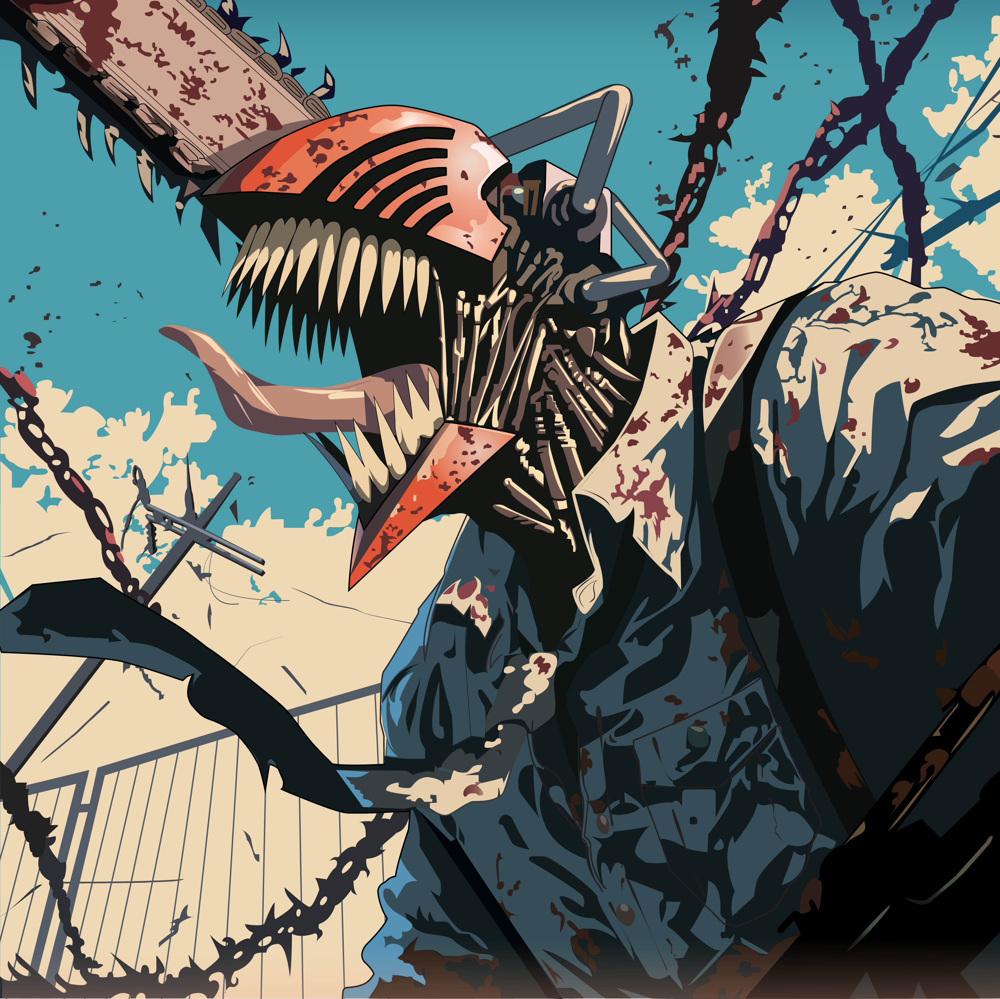
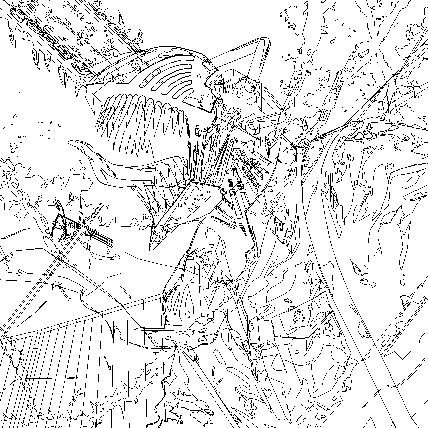
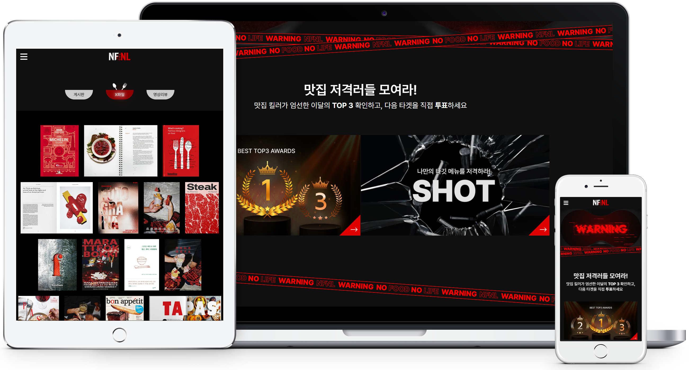

UX/UI Design · Motion Graphics
LEE
DA GYEOM
시각 작업을 바탕으로 모션 그래픽과 영상 편집을 익히고,
UX/UI 화면 설계로 작업 범위를 넓혔습니다.
About Me
I design experiences
that move.
사용자의 흐름을 읽고, 움직임으로 기억되는 화면을 만듭니다. 기획과 디자인, 퍼블리싱과 모션을 하나의 경험으로 연결하는 이다겸입니다.
More About Me
01
Artwork
Illustration · Vector Artwork
강렬한 분위기와 디테일을 가진 벡터 기반 아트워크입니다. 완성 이미지와 라인 작업을 함께 보여줍니다.
View Project

02
Motion
Premiere Pro · After Effects · Editing
영상의 흐름과 감정을 설계하여 브랜드의 이야기를 시각적으로 전달합니다.
View Project
04
Web
Branding · Web Design · Publishing · Motion · Editing
브랜드 아이덴티티 구축부터 웹사이트, 퍼블리싱, 모션까지 통합적으로 디자인한 최신 대표 프로젝트입니다.
View Project